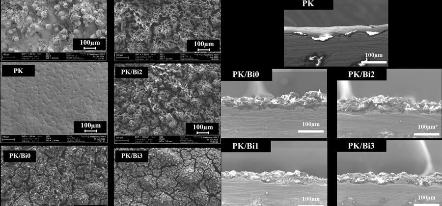
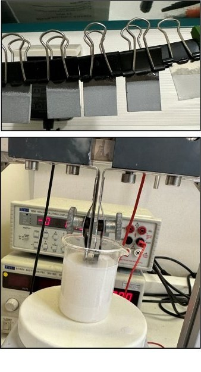
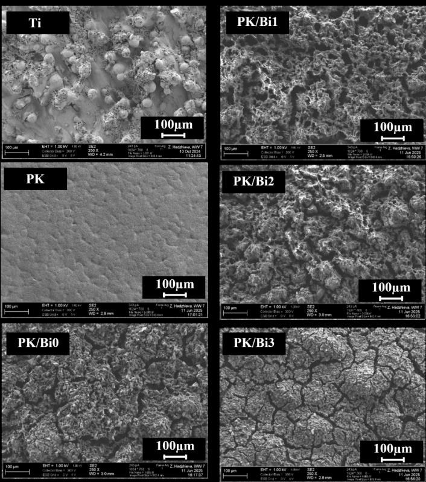
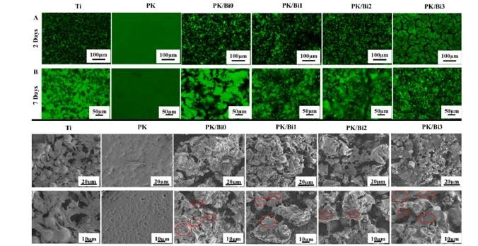

Electrophoretic depositionElektrophoretische AbscheidungElektroforetická depozíciaDépôt électrophorétiqueDeposición electroforética
An electric field drives charged PEEK and bismuth-containing borate glass particles onto a 3D-printed titanium alloy implant.Ein elektrisches Feld treibt geladene PEEK- und bismuthaltige Boratglaspartikel auf ein 3D-gedrucktes Implantat aus Titanlegierung.Elektrické pole poháňa nabité častice PEEK a borátového skla s obsahom bizmutu na 3D tlačený implantát z titánovej zliatiny.Un champ électrique entraîne des particules chargées de PEEK et de verre borate contenant du bismuth vers un implant en alliage de titane imprimé en 3D.Un campo eléctrico arrastra partículas cargadas de PEEK y de vidrio de borato con bismuto hacia un implante de aleación de titanio impreso en 3D.
The techniqueDas VerfahrenTechnikaLa techniqueLa técnica

Surfaces and cross-sections of the PEEK/borate glass coatings.Oberflächen und Querschliffe der PEEK/Boratglas-Beschichtungen.Povrchy a priečne rezy povlakov PEEK/borátové sklo.Surfaces et coupes transversales des revêtements PEEK/verre borate.Superficies y secciones de los recubrimientos de PEEK y vidrio de borato. RADIOBIOCOATS, FunGlass. © TnUAD.Electrophoretic deposition works at room temperature and coats complex shapes, such as 3D-printed implants. PEEK, a polymer already used in implants, forms the matrix that holds the bismuth-containing borate glass.Die elektrophoretische Abscheidung arbeitet bei Raumtemperatur und beschichtet komplexe Formen wie 3D-gedruckte Implantate. PEEK, ein bereits in Implantaten verwendetes Polymer, bildet die Matrix, die das bismuthaltige Boratglas hält.Elektroforetická depozícia pracuje pri izbovej teplote a povlakuje zložité tvary, napríklad 3D tlačené implantáty. PEEK, polymér už používaný v implantátoch, tvorí matricu, ktorá drží borátové sklo s obsahom bizmutu.Le dépôt électrophorétique fonctionne à température ambiante et revêt des formes complexes, comme les implants imprimés en 3D. Le PEEK, un polymère déjà utilisé dans les implants, forme la matrice qui retient le verre borate contenant du bismuth.La deposición electroforética trabaja a temperatura ambiente y recubre formas complejas, como implantes impresos en 3D. El PEEK, un polímero ya usado en implantes, forma la matriz que sujeta el vidrio de borato con bismuto.
A short heat treatment then consolidates the composite coating on the metal.Eine kurze Wärmebehandlung verfestigt anschließend die Verbundbeschichtung auf dem Metall.Krátke tepelné spracovanie potom spevní kompozitný povlak na kove.Un court traitement thermique consolide ensuite le revêtement composite sur le métal.Después, un breve tratamiento térmico consolida el recubrimiento compuesto sobre el metal.
This work is part of the joint doctoral thesis of Mina Abdolmaleki, M.Sc., at FunGlass and FAU.Diese Arbeit ist Teil der gemeinsamen Dissertation von Mina Abdolmaleki, M.Sc., am FunGlass und an der FAU.Táto práca je súčasťou spoločnej dizertačnej práce Miny Abdolmaleki, M.Sc., v centre FunGlass a na FAU.Ce travail fait partie de la thèse de doctorat en cotutelle de Mina Abdolmaleki, M.Sc., à FunGlass et à la FAU.Este trabajo forma parte de la tesis doctoral conjunta de Mina Abdolmaleki, M.Sc., en FunGlass y la FAU.


Impactful resultsWichtige ErgebnisseVýznamné výsledkyRésultats marquantsResultados destacados




All radiographsAlle RöntgenbilderVšetky röntgenové snímkyToutes les radiographiesTodas las radiografíasIn vitro testsIn-vitro-TestsTesty in vitroTests in vitroEnsayos in vitroOther techniquesWeitere VerfahrenĎalšie technikyAutres techniquesOtras técnicas